Welcome to Australia Appliance Energy Consumption
Here you can find the energy consumption rate of common household appliances in Australia. The list is update monthly.
Appliance Energy Consumption in Australia
Household appliances and equipment account for an average of 25% of total residential energy consumption across Australia. However, this proportion will vary by household depending on the climate, the types of appliances in your home, and the way they are used. Heating and cooling uses around 40% of household energy use.
Appliances that use the largest amounts of energy include fridges and freezers (responsible for an average 7% of household energy use), clothes dryers (up to 10% of household energy use for heavy users), and TVs and home entertainment equipment (an average of around 5% of household energy use). In homes with a pool, the pool pump is a high user of energy (up to 18%).
Household appliances contribute to peak electricity demand, which refers to major spikes in electricity use that occurs at certain times (for example, between 5pm and 8pm when people arrive home from work and turn on their air-conditioners, TVs, lights, and other appliances). If peak demand exceeds the maximum supply levels, some regions can experience electricity outages. Supplying electricity for an ever-increasing peak demand requires building more electricity infrastructure, which is paid for by increases in energy prices.
(exercise 4 bar chart moved to TV page)
TV
Depending on level of usage, TV may be a take up a portion of energy bills. However, that does not mean that we should stop watching TVs, but rather we should purchase energy efficient TVs so that we are able to continue watching TVs without putting a dent on our budget. However, there are so many TV models in the market that consumers get confused on how to select the most energy efficient TV. For example, according to the energy rating data for household appliances provided by the Australian government for our research (the data for TV is available at: https://data.gov.au/data/dataset/energy-rating-for-household-appliances/resource/93a615e5-935e-4713-a4b0-379e3f6dedc9), there are 4573 TV models in Australia currently available in the market. With so many models to choose from, how do consumers ensure that they are selecting the most energy efficient model to minimize their energy bills?
There are several factors that influences the energy consumption of TVs, including screen technology and screen size.
Screen technology
There are different screen technologies for TV, each with their own advantages and disadvantages in terms color accuracy and contrast, viewing angles, design etc. They also differ in terms of power consumption. So one of the most pressing question on a cost-conscious consumer's mind is: Which screen technology consumes the least energy to ensure low energy bills?
Online research would reveal that amongst the 3 most popular technologies, LCD, LED and OLED, OLED consumes the most energy while LED consumes the least energy. LCD is in the middle in terms of energy consumption. However, to get a definitive answer, it is better to investigate actual TV models in the market and compare the energy use.
It is important to note that while provided by the Australian government, the dataset may not be complete and up-to-date. In addition, energy consumption may vary according to real world conditions. However, the dataset contains many information and thus is a useful starting point for our research purposes. To find average enery consumption for each screen technology, we will only require two data: screen technology and power consumption. In this dataset, there is only one screen technology column listing whether the TV model uses LCD, LCD(LED) or OLED. However, there are 3 seperate columns for power consumption:
- Pasv_stnd_power: the amount of energy used by the appliance in passive standby power mode
- Act_stnd_power: the amount of energy used by the appliance in active standby power mode
- Avg_mode_power: the amount of energy used by the appliance when the television is in use.
For simplicity's sake, we will be using avg_mode_power, which is the amount of energy used by the appliance when the television is in use, since how much power the TV consumes when it is switched on and actively in use is a more realistic indicator of energy use for an average consumer. We will get the mean value of avg_mode_power for each type of screen technology, and the screen technology with the lowest mean value will be the one that consumes the least energy. The results are as follows:
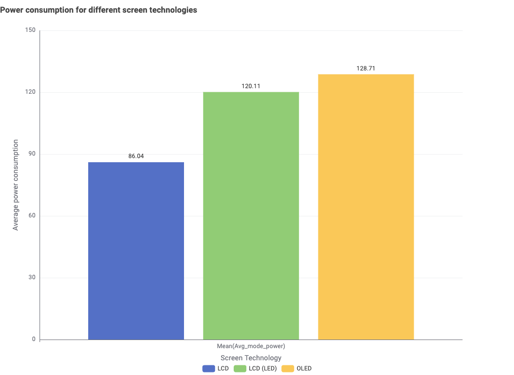
The x-axis or colored bars represent different screen technologies, while the y-axis or height of the bars show the mean value of avg_mode_power for the specific type of screen technology.The results are rather surprising. As we can see from the bar chart above, instead of LCD consuming the least energy as we stated in the hypothesis, the screen technology with lowest energy consumption is actually LED (the left bar in blue), with the mean value of 86.04, followed by LCD (the middle bar in green) with mean value of 120.11, and finally OLED (the right bar in yellow) with mean value of 128.71. There is a difference of around 35 between LED and LCD, while only a small difference of around 8 between LCD and OLED. This shows that LED consumes significantly less energy than the two other types screen technology, so consumers should select LCD TV for more energy savings.
The following image shows the summary of this section:
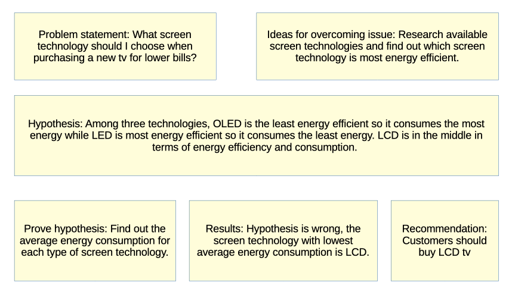
Screen Size
Besides screen technology, another important consideration for consumers when selecting TV is the screen size. Generally speaking, bigger screen size will result in a better viewing experience, subject to the length and width of the room the TV will be placed in. However, as mentioned above, screen size is also one of the factors influencing energy consumption. So one question consumers will ask is: Will bigger screen size result in higher energy bills?
Logically speaking, bigger screen size should have higher power consumption, as there is a larger surface area that needs to emit light, so more electrical energy is required to transform into light energy. Since this is just a hypothesis based on logic, so to get a definitive answer, it is better to investigate actual TV models in the market and compare the energy use. Again, we can use the same energy rating data for household appliances provided by the Australian government used in the section above for our research.
To find average energy consumption for each screen size, we will only require two data: screen size and power consumption. Similar to section above, we will be using avg_mode_power, which is the amount of energy used by the appliance when the television is in use, since how much power the TV consumes when it is switched on and actively in use is a more realistic indicator of energy use for an average consumer. For screen size however, for the majority of the models we used the screen size advertised in the model name. For some models where we were unable to extract screens size from the model name, or if there is a difference larger than 5 inch between the extracted screen size from the model name and actual screen size, we used the actual screen size round up to the nearest integer is its screen size.
We will get the mean value of avg_mode_power for each screen size, and plot the results in a line graph. A line graph is used because it can easily show the increase or decrease in avg_mode_power as the screen size increases. The results are as follows:
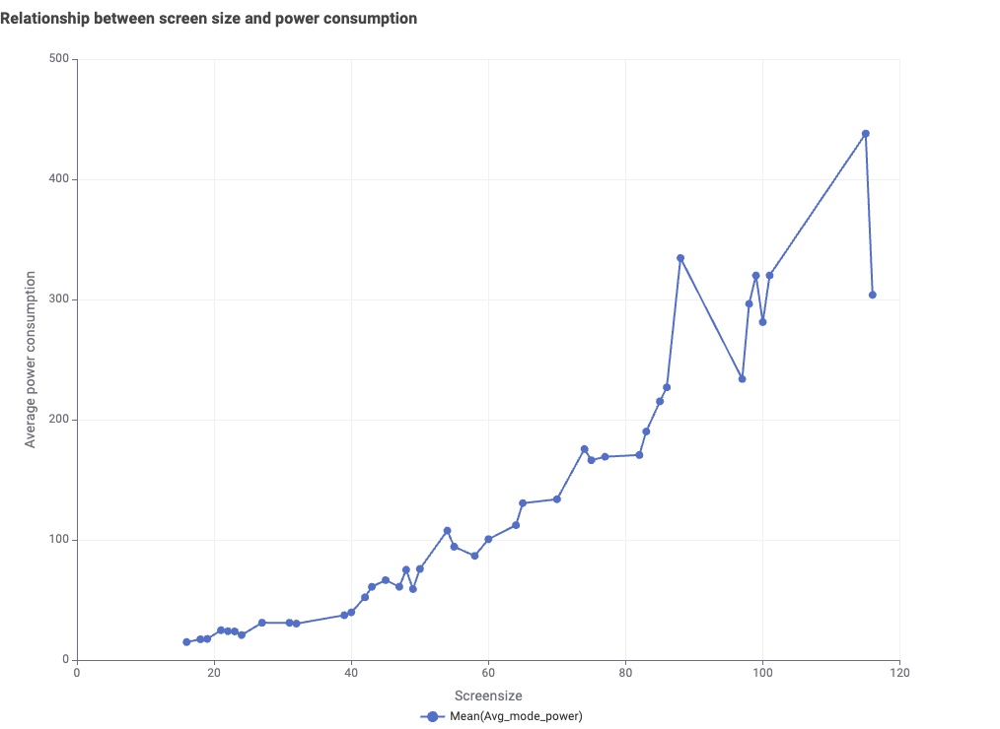
The x-axis represent the different screen sizes in increasing order, and each dot plotted on the graph is a screen size we extracted from the data. The y-axis or the height of the dot show the mean value of avg_mode_power for the specific screen size. As we can see from the line graph above, while it is not a clear straight line, there is a general upwards trend showing that there is indeed an increase in average power use as the screen size increases, so consumers should select smaller sized TV for more energy savings.
The following image shows the summary of this section:
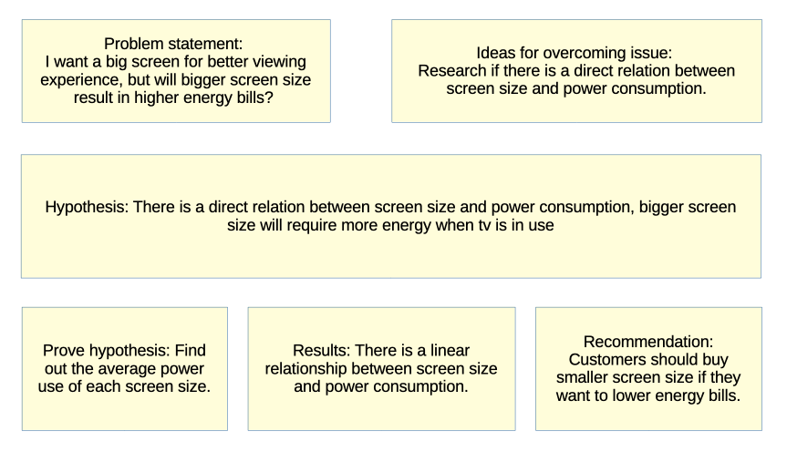
Star Rating
From the sections above, we can see that selecting LCD TV with smaller screen sizes are most likely to result in the lowest power consumption. However, not everyone wants to buy LCD TVs, and consumers would also want to buy TV with bigger screen sizes for better viewing enjoyment. So these consumers will likely ask: Are there any other criteria to look for if I do not want LCD or smaller screen sizes? Not to mention the fact that there are many TV models in the market, with overlapping screen technologies and screen sizes. So consumers will also be likely to be confused and ask: If presented a choice between different models with the same screen technology and screen size, which model should I choose?
Research indicates that we can use star rating levels to determine the energy efficiency of electrical appliances. The more stars an appliance has, the more energy efficient it is. We can investigate actual TV models in the market and compare the energy use for different star rating to determine if this is true. Again, we can use the same energy rating data for household appliances provided by the Australian government used in the section above for our research.
To find average energy consumption for each star rating, we will only require two data: star rating and power consumption. Similar to section above, we will be using avg_mode_power, which is the amount of energy used by the appliance when the television is in use, since how much power the TV consumes when it is switched on and actively in use is a more realistic indicator of energy use for an average consumer. For star rating, we will be using the data from column Star2, which lists the actual star rating of the television.
We will get the mean value of avg_mode_power for each star rating, and plot the results in a line graph. A line graph is used because it can easily show the increase or decrease in avg_mode_power as the star rating increases. The results are as follows:
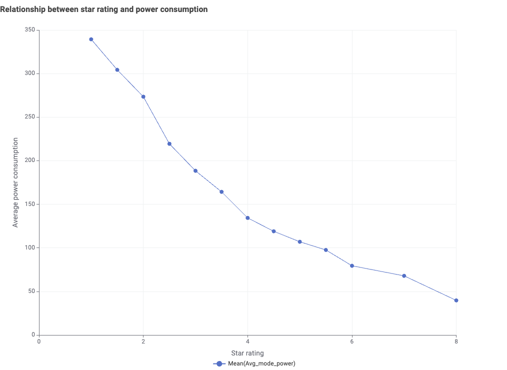
The x-axis represent the different star ratings levels in increasing order, and each dot plotted on the graph is a star rating level. The y-axis or the height of the dot show the mean value of avg_mode_power for the specific star rating level. As we can see from the line above, while it is not a clear straight like, there is a general downwards trend showing that there is indeed an decrease in average power use as the star rating increases, so consumers should select TVs with higher star ratings for better energy efficiency and lower power consumption.
The following image shows the summary of this section:
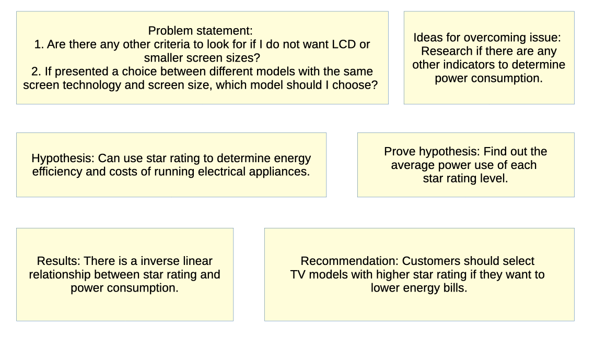
Conclusion
In general, power consumption of TV is affected by screen size and screen technology. The screen technology with lowest power consumption is LCD, followed by LED and OLED. The smaller the screen size, the lower the power consumption. However, this does not mean that consumers should restrict themselves to only LCD TVs with small screen sizes. In fact, a better indicator of power consumption would be to look at the star rating. The more stars or the higher the star rating, the lower the power consumption. Consumers can purchase TV with any screen technology and screen size as long as the model has a high star rating. The following image shows the storyboard of this page:
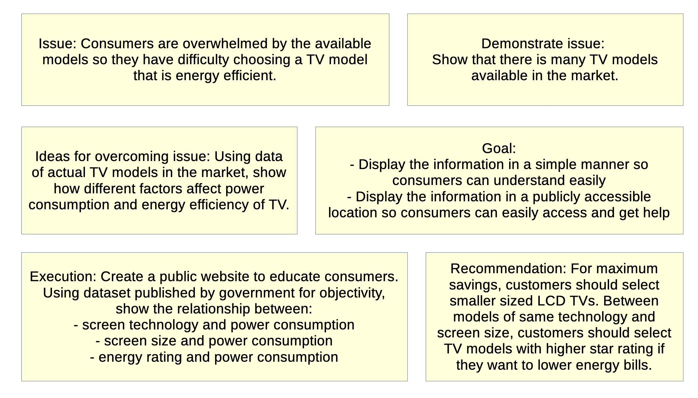
About us
We are the Australia Consumer Group.
SVG image
Custom 1:
Custom 2:
SVG coordinate system
circle:
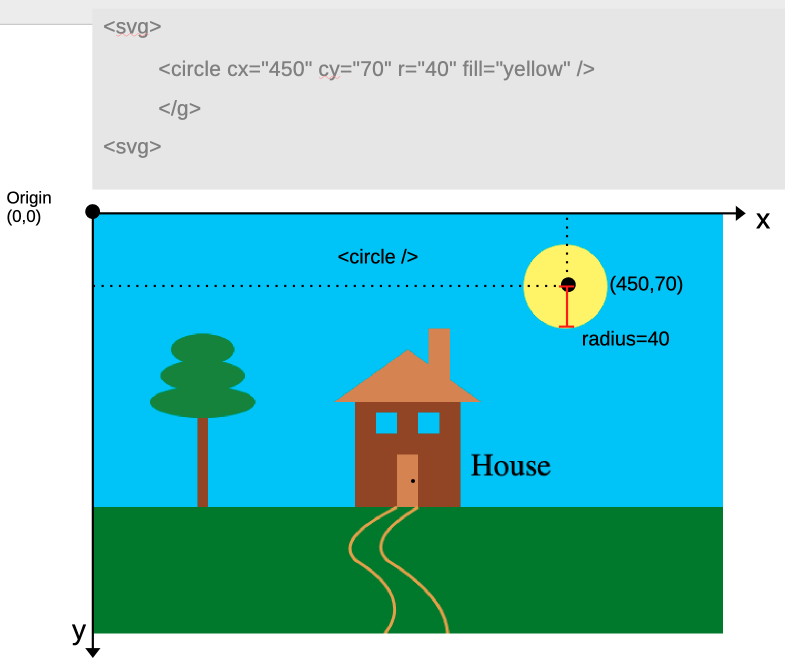
Ellipse:
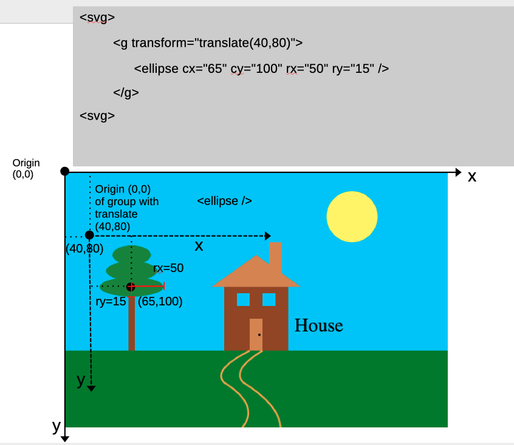
Line:
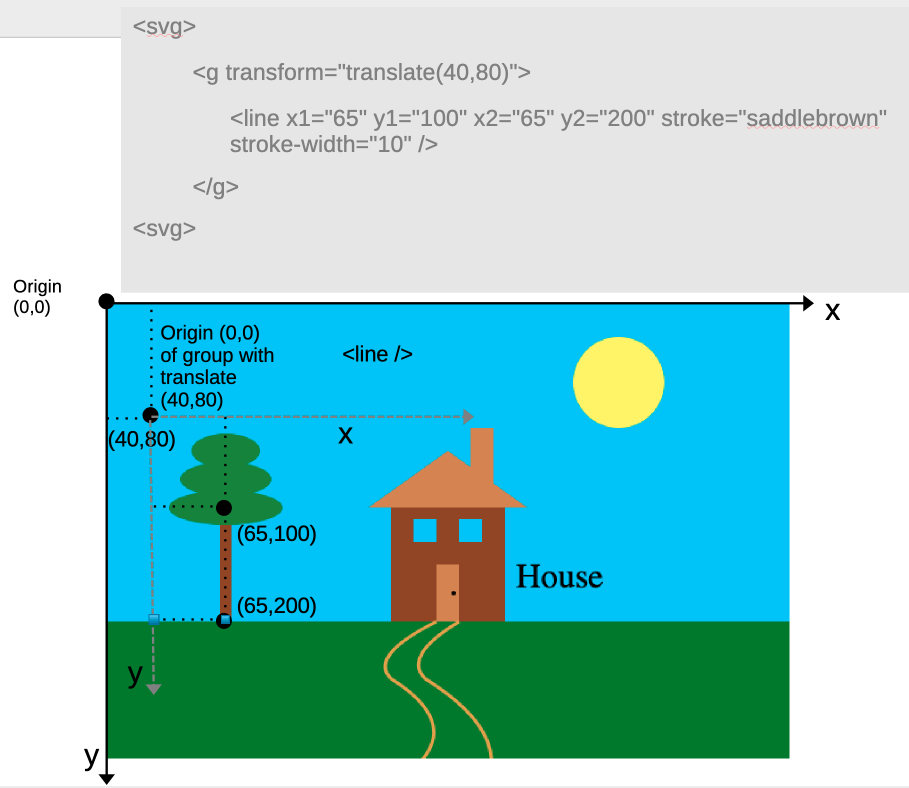
path:
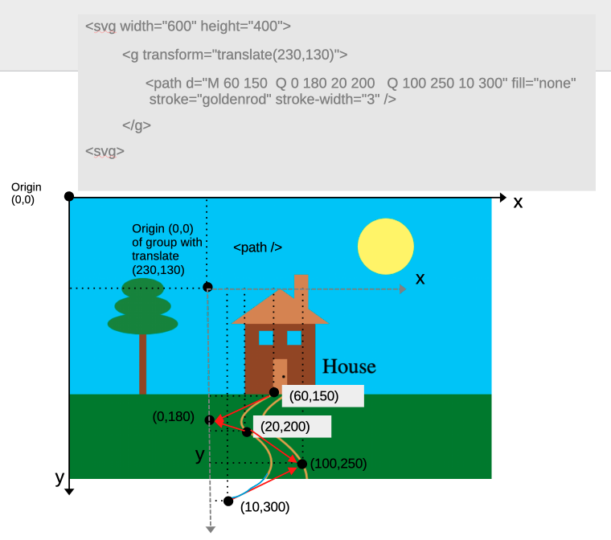
Polygon:
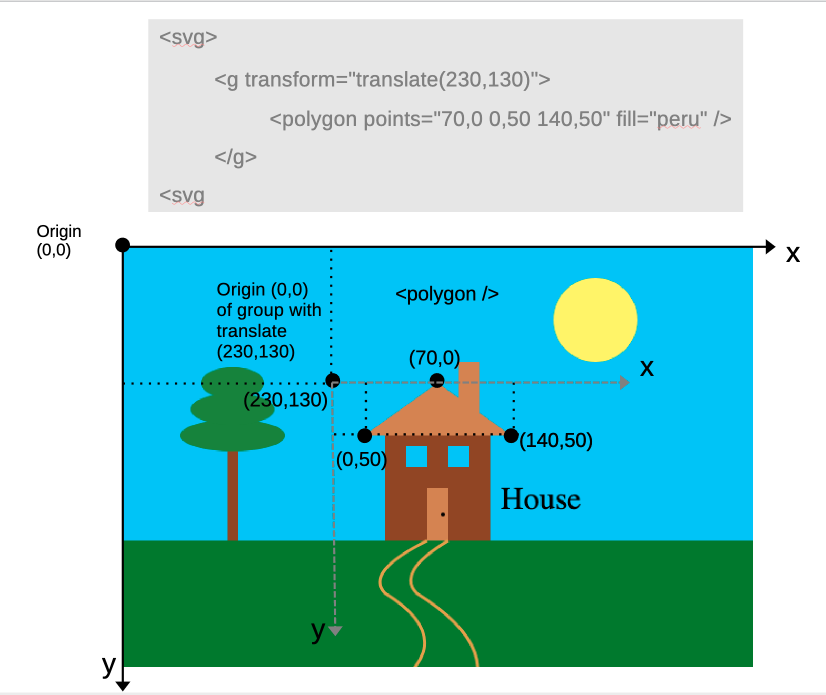
Rectangle:
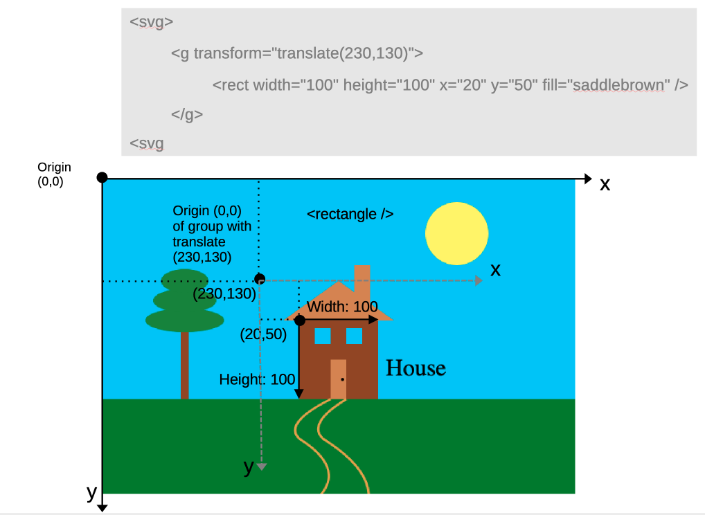
Text:
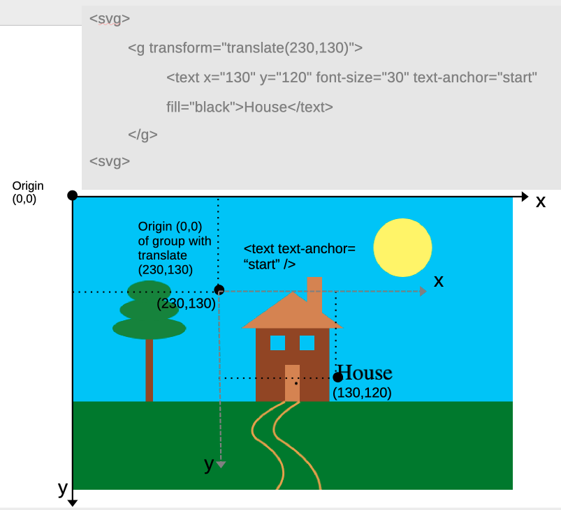
DOM
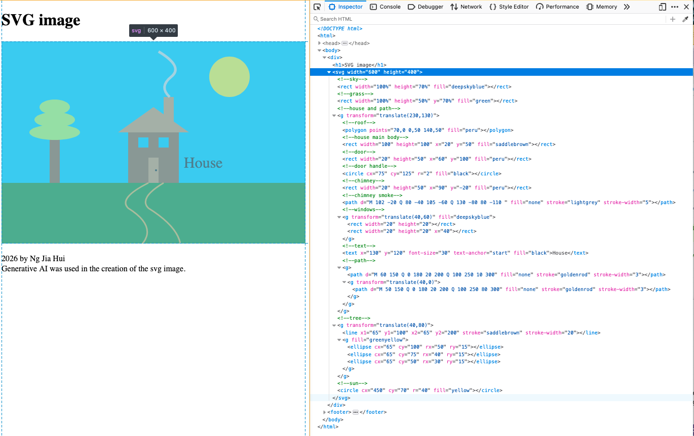